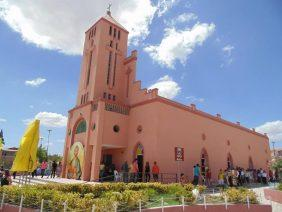

Informações técnicas sobre relevo, população, IDH etc.
| INFORMAÇÕES | |
|---|---|
| Municípios limítrofes | Santa Quitéria, Catunda, Tamboril, Nova Russas, Ipueiras, Ipu e Pires Ferreira |
| Fundação | 1957 (64 anos) Aniversário 27 de dezembro |
| População total | 19 978 hab. |
| Densidade | 20,7 hab./km² |
| Área total | 966,853 km² |
| Clima | TSemi-árido |
| Altitude | 190 m |
| IDH | 0,597 — baixo |
| PIB | R$ 105 356 mil |
| INFORMAÇÕES TERRITORIAIS | |
|---|---|
| Número de habitantes | 19 978 habitantes |
| Superfície de Hidrolândia |
92 738 hectares
927,38 km² (358,06 sq mi) |
| Densidade populacional | 21,5 ha./km² |
| Altitude de Hidrolândia | 186 metros de altitude |
| Coordenadas geográficas decimais |
Latitude:
-4.39682
Longitude: -40.4349 |
| Coordenadas geográficas sexagesimais | Latitude: 4° 23' 49'' Sul , Longitude: 40° 26' 6'' Oeste |
| INFORMAÇÕES DO MUNICÍPIO | |
|---|---|
| Endereço da Prefeitura Municipal de Hidrolândia |
Hidrolândia
Prefeitura de Hidrolândia
Prefeitura de Hidrolândia Av. Luiz Camelo Sobrinho,640 HIDROLÂNDIA - CE, 62270-000 Brasil Work (88) 3638-1305 Fax (88) 3638-1148 |
| Telefone da prefeitura |
(88) 3638-1305
Internacional: +55 (88) 3638-1305 |
| Fax |
(88) 3638-1148
Internacional: +55 (88) 3638-1148 |
| Endereço electrónicoda prefeitura |
A carregar...
|
| Site oficial do município | Hidrolândia.ce.gov.br |
| INFORMAÇÕES DO ADMINISTRATIVAS | ||
|---|---|---|
| Prefeito de Hidrolândia | IRES MOURA OLIVEIRA | |
| Partido politico | PDT | |
| INFORMAÇÕES DE TRANSPORTE | |
|---|---|
| Transporte urbano disponível | --- |
| Aeroporto |
Aeroporto de Sobral 80.3 km
Aeroporto Pinto Martins 171.5 km
Aeroporto Internacional Prefeito Dr.João Silva Filho 220.8 km
|
| INFORMAÇÕES DE DISTÂNCIA A OUTRAS CIDADES | ||
|---|---|---|
| São Paulo : 2234 km | Rio de Janeiro : 2082 km | Brasília : 1509 km |
| Salvador : 978 km | Belo Horizonte : 1758 km | Manaus : 2181 km |
| Curitiba : 2524 km | Recife : 737 km mais perto | Goiânia : 1673 km |
| Belém : 955 km | Porto Alegre : 3071 km | Guarulhos : 2213 km |
| Campinas : 2180 km | São Luís : 478 km | São Gonçalo : 2182 km |
| Distância calculada em linha reta! | ||
Conheça mais sobre a história de Hidrolândia.
Hidrolândia surgiu de um povoado às margens do rio Batoque, sendo que as terras ali existentes pertenciam de imediato à família Timbó. Assim, passou a ser conhecida como Cajazeiras dos Timbó (Timbó no singular, pois representa a família), sendo depois mudado o nome para Batoque, em virtude da existência do rio Batoque que atualmente corta a cidade. Anos depois, na cidade foi encontrada uma fonte de água sulfurosa (só existia um poço perfurado em meado da década de 1960), sendo que a mesma deu um novo aspecto à cidade, que durante algum tempo foi alvo de romarias por causa dos efeitos da cura medicinal e, posteriormente, a um suposto milagre devido à água. Dessa forma, a cidade recebeu o nome em homenagem à fonte, passando então a se chamar Hidrolândia, ou seja, "terra das águas" (hidro = água e lândia= cidade)
Saiba mais sobre os melhores lugares e o que fazer em Hidrolândia.
Floricultura Cemitério Floricultura Cemitério Municipal Hidrolândia

Veja como chegar nos melhores pontos de Hidrolândia